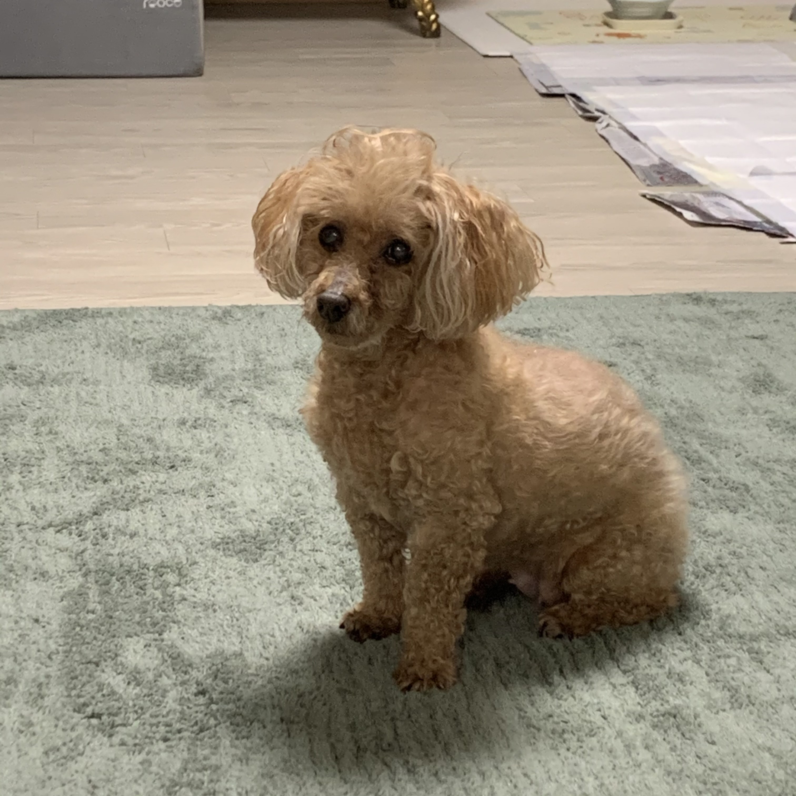

- 푸들에 대한 지식
- 루비와의 첫만남
- 루비의 성장과정
- 루비와 우리 가족
푸들에 대한 지식
1. 개요[편집]
독일 원산 개의 품종.[1]
2. 특성[편집]
성격, 크기, 모질, 지능에 이르는 현대 목적견의 요구조건을 거의 모두 충족시키기 때문에 매우 선호되는 반려견이다.
우리나라에서는 몰티즈 다음으로 가장 많이 기르는 반려견이다.
무엇보다도 큰 특징은 거의 모든 개, 고양이와 다르게 털이 거의 빠지지 않는다는 점이다.
때문에 털날림 문제, 털 알레르기 문제에서 자유롭다. 털 알레르기라는게 보통 진짜 털 자체에 알레르기가 있는 게 아니라
털을 통해 전해지는 각질이나 기타 물질들로 인해 발생되는 것인데 애초에 털이 안 날려 그러한 물질을 크게
퍼트리지 않으니[2]어지간히 예민하지 않은 이상 괜찮은 것. 따라서 알레르기 반응이 없는 가족이 털관리를 해주는게 가장 좋다. 실제로 유명하고 인기있는 푸들 혼종들도 유전자에서 푸들의 비중이 높을 수록 알레르기 반응이 있는 사람에게도 문제없다고 평가되는 편.
훈련성으로 평가되는 개 지능이 탑 쓰리 안에 들 정도로 뛰어나다. 때문에 훈련이 매우 용이하다.
훈련만 잘 시키면 다른 품종의 애완견보다 몇 배는 더 많은 개인기를 훈련시킬 수 있다. 똥오줌을 제대로 못가리거나
짖거나 물거나 하는 등의 문제도 다른 견종에 비해 매우 양호하다.

순해 보이는 외모와 달리 높은 활동성을 요구하는 품종이다. 초보자가 키우기에 수월한 견종이긴 하지만 헛짖음,
분리불안증, 예상 외로 높은 운동 요구도 등의 특징을 갖고 있다. 어려움을 겪는 경우도 흔하므로 본인의 훈육 가능 환경
등을 잘 파악하고 분양에 신중해야한다.
다만 시츄 같은 별종을 제외한다면 어차피 대부분의 개는 활동량이 높기 때문에
푸들 견주에게만 부담이 되는 부분은 결코 아니다.